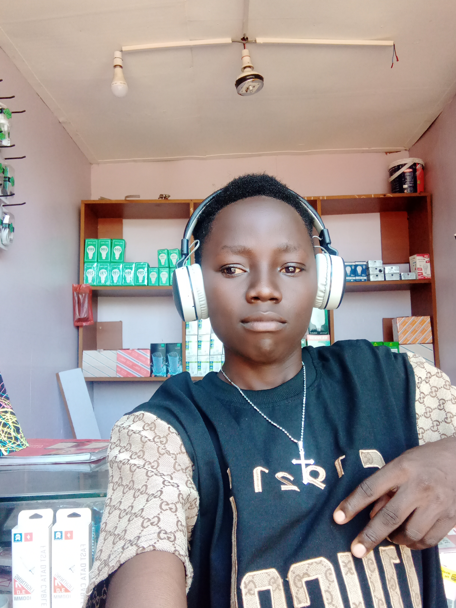

LOMOSON'S is a qualified phones and computers technician who deals in both hardware and software maintances ,he started his technician work since childhood in mitika BOMA in yei country south sudan in 20211 and he contined with his further studies in primary level in uganda bidibidi campus and laster on he joined his secondary school in Kawempe standard secondary school in kampala than he joined institute of tecnology in makerere university

LOMOSONS was born in 1998 in family of eight childen as the second last born of PETER KHEMIS LODUKU and JACKLINE MILYin mitika BOMA, He is single until date and he is A founder of LOMO&SON'S FOUNDATION
It is located in yei , south sudan